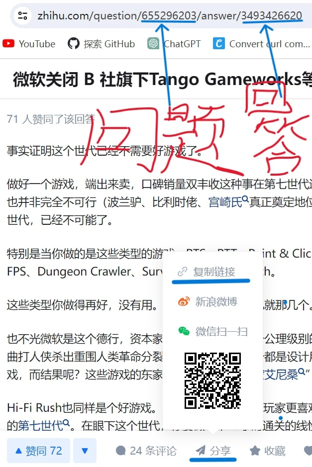
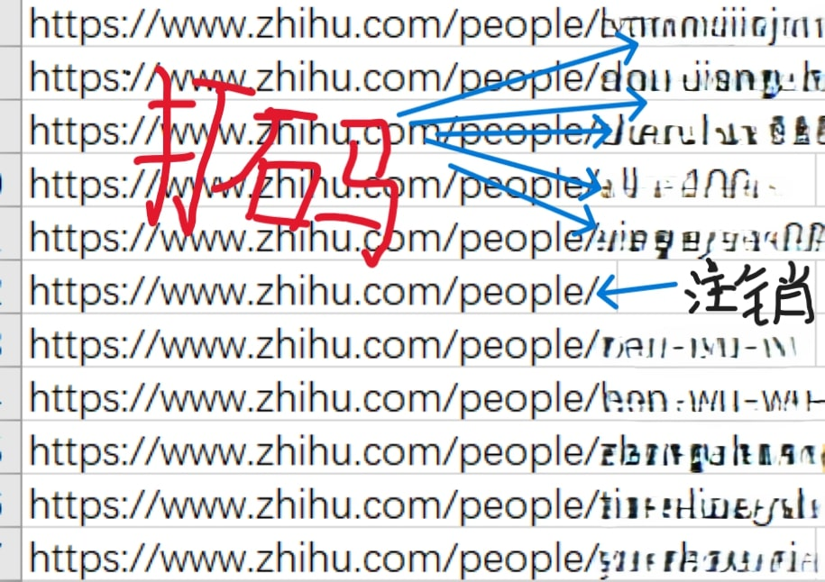
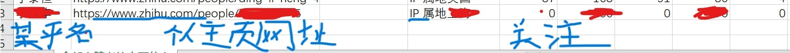
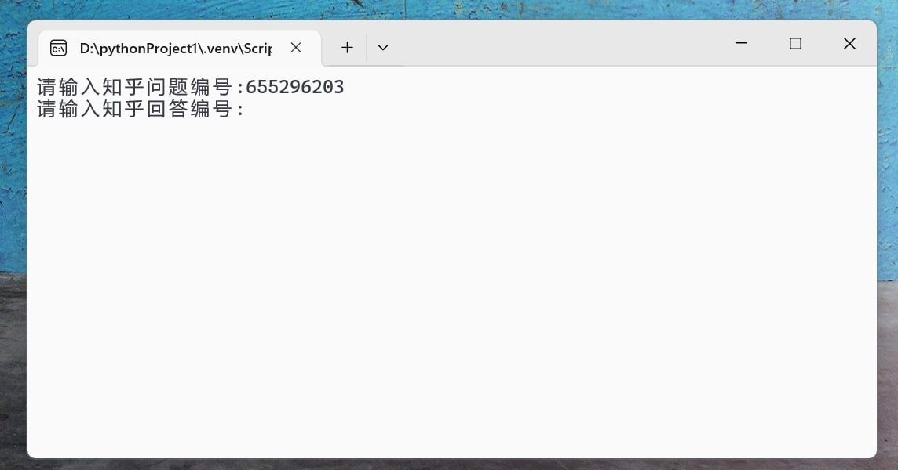

首先说明，虽然程序是我写的打包的，下面也提供了txt形式的源代码，在另一台windows运行也没问题，微云步沙箱只是提示不要安装在C盘，腾讯哈博也检测没问题。但是从本网页下载exe文件仍然会被我的edge/chorme浏览器警告然后拦截。有顾虑的可以看最后的安全运行方法。
非javascript逆向爬虫,知乎限制，一个回答最多能爬1980个点赞者链接,每小时爬取600条左右
exe运行输出结果csv文件也是表格，和excel几乎没差别excel可打开。
手机端：
知乎app——选择一个知乎回答——分享——分享链接——复制到一个空白文档
就会出现“https://www.zhihu.com/question/655477917/answer/3492900832”这类网址
"question"后面的数字就是问题编号，"answer"后面的数字就是回答编号.
电脑网页端：
打开知乎网页——选择一个知乎回答——分享——分享链接——复制到一个空白文档或网址输入栏
就会出现“https://www.zhihu.com/question/655477917/answer/3492900832”这类网址
"question"后面的数字就是问题编号，"answer"后面的数字就是回答编号.如下图. 
爬一个回答的点赞者主页网址链接(最多能爬1980个)，输出一个csv文件.
结果如下图.已注销用户主页的网址：https://www.zhihu.com/people/，正常用户的主页网址：https://www.zhihu.com/people/ +" 注册时的用户名(中文名会改为英文/英文+数字)".如下图.
访问一个知乎用户的主页网址链接，获得网页源代码，从源代码筛选出9类信息.知乎名,主页网址链接,个人签名,IP属地,被关注,关注,赞同,喜欢,收藏.输出一个csv文件.如下图.
安装包是exe文件，还不会设置图形化操作页面，所以双击会打开命令行运行，只需输入"问题编号","回答编号".如下图.
知乎爬虫exe运行输出2个csv文件，点赞者的地域IP分类运行输出一个csv文件
知乎爬虫exe运行出现，“错误”，不用理会，这些错误都是已注销用户
第二个exe文件运行需要读取第一个exe文件输出的一个文件，2个exe文件必须放在同一个文件夹。exe文件最好放在D/E/F等盘，不要放C盘。
知乎爬虫压缩包 点赞者的地域IP分类压缩包 知乎爬虫的源代码 点赞者的地域IP分类的源代码安全运行方法
云沙箱检测exe文件，安全无毒后运行 哔哩哔哩5款沙箱工具推荐 微步云沙箱 腾讯哈勃分析系统 VirusTotal VirScan 大圣云沙箱
或者淘宝12元购买家庭版windows升级专业版，专业版有windows sandox功能，直接把exe文件拖拽到windows sandox运行windows sandbox教程